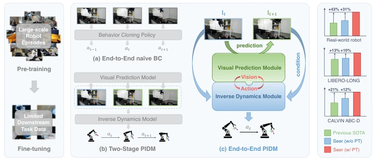
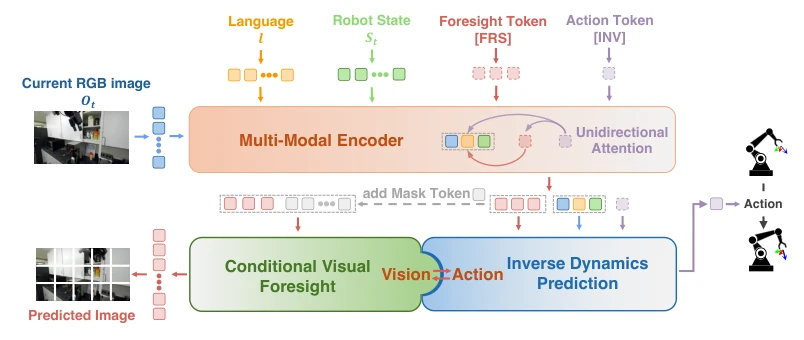
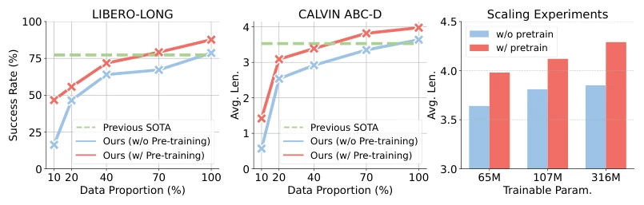
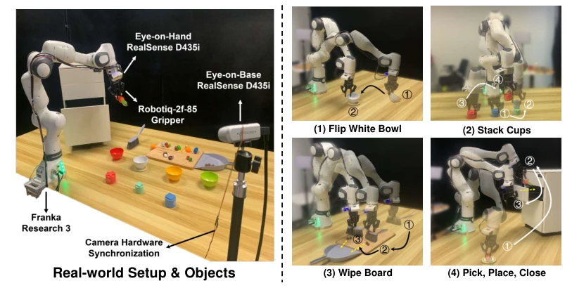
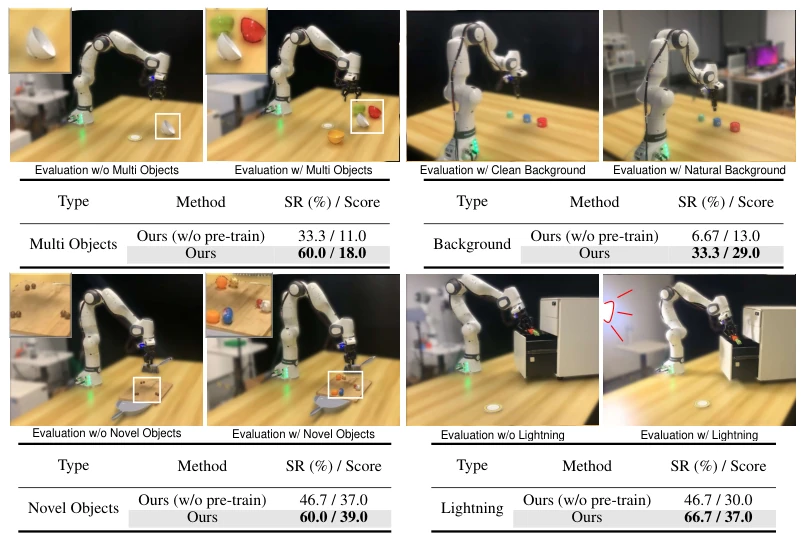

The model name 'Seer' is quite evocative, but the core logic is actually not complex: it forcibly combines visual prediction and inverse dynamics for end-to-end learning. Previously, either blindly imitating actions like RT-1, or learning world models first then controlling like CLOVER, the vis-motor loop was always broken. Seer essentially stitches these two parts together. Although stacking parameters with Transformer is fundamental, its pretraining on DROID is indeed effective, and real-world robustness is slightly better than OpenVLA. However, only 6 tasks were tested, claiming "scalability" is a bit premature, since there was no cross-robot validation, and for long-horizon tasks it relies on pretraining data quality, generalization still depends on subsequent performance. Additionally, although real-world experiments are numerous, scenarios are singular, no complex contact tasks were observed, the so-called "general" capability may merely be overfitting to specific hardware.
研究动机Motivation
机器人策略学习主要分两派：一派死磕动作克隆（Brohan et al., 2022; Ghosh et al., 2024），另一派搞视觉预训练（Nair et al., 2022; Xiao et al., 2022）。前者忽略了视觉动态，后者往往把预测和控制割裂成两阶段（Bu et al., 2024; Black et al., 2023）。人类是眼手协同的，训练时却把视动解耦，推理时又各自为政，这怎么学出通用策略？现有方法在长视界任务上表现不佳，且对噪声敏感。需要一种能统一视觉预测与动作生成的端到端范式，利用大规模数据同时学习感知与决策，而非简单拼接。
Robot policy learning is primarily divided into two schools: one rigorously pursuing action cloning (Brohan et al., 2022; Ghosh et al., 2024), and the other focusing on visual pretraining (Nair et al., 2022; Xiao et al., 2022). The former ignores visual dynamics, while the latter often separates prediction and control into two stages (Bu et al., 2024; Black et al., 2023). Humans are eye-hand coordinated, yet training decouples vision and motor, and inference treats them separately; how can a general policy be learned? Existing methods perform poorly on long-horizon tasks and are sensitive to noise. A unified end-to-end paradigm is needed that integrates visual prediction and action generation, leveraging large-scale data to learn perception and decision simultaneously, rather than simple concatenation.

Figure 1: In contrast to previous methods that (a) conduct end-to-end naive behavior cloning from large-scale robotic data or (b) use decoupled visual prediction and inverse dynamics models to set goals and guide actions, we present end-to-end Predictive Inverse Dynamics Models (PIDM) that closes the loop between vision and action. Seer, the model we built, surpasses previous states of the art and demonstrates consistent improvements over the ablated version without pre-training.
The model is named Seer and is based on a Transformer. Inputs include language, images, and states. The core consists of two special tokens: [FRS] handles conditional visual lookahead, predicting future RGB images; [INV] handles inverse dynamics prediction, predicting actions based on historical observations and future images. During training, end-to-end joint optimization is performed, with the loss function comprising image reconstruction MSE and action prediction Smooth-L1/BCE, where the action loss includes both arm and gripper components. The key innovation lies in the unidirectional attention mask, allowing [INV] to deeply integrate past and future information to achieve a vis-motor loop. Pretraining utilizes the large DROID dataset, while fine-tuning uses downstream data. ViT extracts visual features, CLIP processes language, and MLP processes states. [FRS] and [INV] are embedded as readout tokens into the sequence and fused via a multimodal encoder. This design avoids error accumulation in traditional two-stage methods, allowing action prediction to directly benefit from visual prediction gradients. Model parameters are scalable: the standard version has 65M, and the Large version has 315M, both keeping pretrained encoders frozen.

Figure 2: Pipeline of Seer. Seer consists of three parts: Multi-Modal Encoder, Conditional Visual Foresight and Inverse Dynamics Prediction. In Multi-Modal Encoder, Seer incorporates the fore- sight token [FRS] and the action token [INV]. Both tokens attend to the RGB images, language tokens, and robot state tokens, with [INV] also attending to [FRS]. In Conditional Visual Foresight, the encoded [FRS], along with new mask tokens, aims to reconstruct future RGB images. In Inverse Dynamics Prediction, the encoded [INV] and other tokens speculate intermediary actions.
Simulations used LIBERO-LONG and CALVIN ABC-D, while real-world experiments used Franka robots. Baselines included OpenVLA, MVP, CLOVER, etc. Metrics evaluated success rate (SR) and average completion length (Avg Len). Seer achieved an Avg Len of 4.28 on CALVIN, setting a new SOTA, and improved by 10% on LIBERO. In real-world tasks, robustness under lighting variations and new object interference was significantly superior to OpenVLA. Ablation studies proved that visual lookahead and inverse dynamics loss are indispensable, and pretraining provides a massive boost in data-scarce scenarios. At 10% data, the pretrained model improved success rate by 187% compared to training from scratch. Scaling experiments showed that increasing parameters improved performance, demonstrating the model's scalability.

Figure 3: Data efficiency and Scalability. The two figures on the left depict Seer’s performance on LIBERO and CALVIN using different proportions of the downstream data. And the figure on the right illustrates Seer’s performance on CALVIN with various model sizes.

Figure 4: Real-world Benchmark of four generalization-centric tasks. Left: We use a Franka Research 3 robot with a Robotiq-2f-85 gripper and two RealSense D435i cameras. Right: We design four real-world manipulation tasks: (1) Flip White Bowl, (2) Stack Cups, (3) Wipe Board, (4) Pick, Place, Close. The detailed description of these tasks are included in A.6.1.

Figure 5: Generalization evaluation. We design a generalization test per task with different dis- turbances. Top Left: In Flip Bowl, we put several bowls with the same shape, size, material and different colors around the original white one. Top Right: In Stack Cups, we remove the original black backdrop and keep the natural background. Bottom Left: In Wipe Board, we replace the chocolate balls with diverse novel small objects. Bottom Right: In Pick, Place, Close, we introduce an additional light source. Among all tests, our pre-trained method brings consistent benefits.